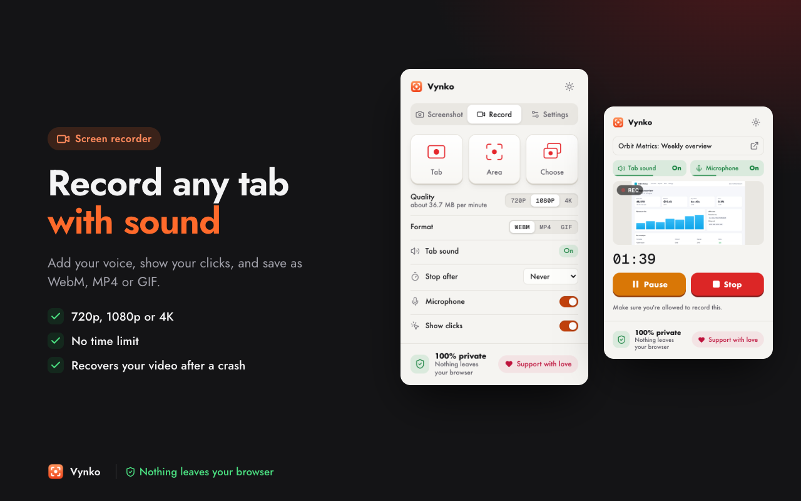

Je scherm opnemen met geluid
Neem een tabblad op met het eigen geluid, of een venster of je hele scherm met systeemaudio, en voeg je stem toe via de microfoon. Live niveaubalken laten zien dat er geluid binnenkomt.
Toevoegen aan Chrome, het is gratis
Zo doe je het
- Klik op het Vynko-icoon en open Opnemen.
- Zet Microfoon aan om je stem toe te voegen. Een niveaubalk beweegt als je praat.
- Kies Tabblad om dit tabblad met geluid op te nemen, of Venster of scherm en vink "Systeemaudio delen" aan in het deelvenster.
- Druk op Stoppen. De video opent in een eigen tabblad, klaar om in te korten en te downloaden als MP4 of WebM.
Goed om te weten
- Het tabbladgeluid komt rechtstreeks uit het tabblad, dus je speakers worden niet mee opgenomen.
- Systeemaudio voor vensters en het hele scherm werkt op Windows en ChromeOS. Op een Mac kan Chrome tabbladgeluid en de microfoon opnemen, maar geen andere apps.
- Opnames worden tijdens het opnemen al op schijf opgeslagen, dus bij een crash raak je ze niet kwijt.
Vragen
Kan Vynko systeemaudio opnemen?
Ja, op Windows en ChromeOS als je een venster of het hele scherm deelt. Op macOS neem je een tabblad op om het geluid daarvan te krijgen, plus je microfoon.
Worden mijn stem en het tabbladgeluid samengevoegd?
Ja, ze komen allebei in één geluidsspoor.
Is er een tijdslimiet?
Nee. Als je wilt, kun je een automatische stop instellen.
Meer met Vynko
- Met één klik een screenshot van een Chrome-tabbladLeg precies vast wat je in het huidige tabblad ziet, zonder de balken van de browser. Maak er daarna aantekeningen op, vervaag privégegevens en sla het op of kopieer het.
- Screenshot van de hele pagina van elke websiteVynko scrolt de pagina voor je, wacht op afbeeldingen die pas later laden, verbergt vaste headers zodat ze niet herhaald worden en voegt alles samen tot één lange afbeelding.
- Screenshot van elk venster of elke appNiet alleen webpagina's: leg een ander browservenster, een desktop-app of een tabblad dat je niet bekijkt vast via het deelvenster van je browser.
- Screenshot van je hele schermLeg alles op een monitor vast: het bureaublad, alle vensters en de taakbalk. Snij het daarna bij of maak aantekeningen in de editor.
- Je scherm opnemen met je webcamVoeg een ronde webcambubbel toe aan opnames van een tabblad, venster of scherm en verplaats hem daarna in de editor, maak hem groter of kleiner of haal hem weg.
- Alles wat Vynko kanScreenshots, opnemen, bewerken, privacy en alle veelgestelde vragen.